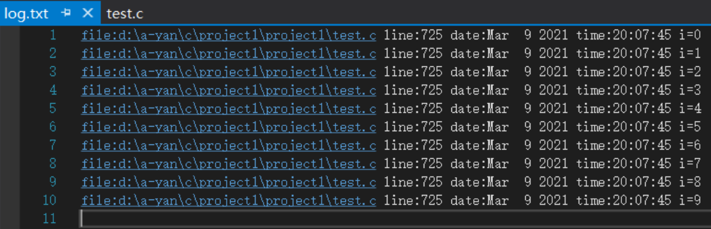

程序的翻译环境和执行环境
在ANSI C的任何一种实现中，存在两个不同的环境。
第1种是翻译环境，在这个环境中源代码被转换为可执行的机器指令。
第2种是执行环境，它用于实际执行代码。
详解：C语言程序的编译+链接
翻译环境
- 组成一个程序的每个源文件通过编译过程分别转换成目标代码（object code）。
- 每个目标文件由链接器（linker）捆绑在一起，形成一个单一而完整的可执行程序。
- 链接器同时也会引入标准C函数库中任何被该程序所用到的函数，而且它可以搜索程序员个人的程序库，将其需要的函数也链接到程序中。
编译本身也分为几个阶段
- 预处理 选项 gcc -E test.c -o test.i 预处理完成之后就停下来，预处理之后产生的结果都放在test.i文件中。
- 编译 选项 gcc -S test.c 编译完成之后就停下来，结果保存在test.s中。
- 汇编 gcc -c test.c 汇编完成之后就停下来，结果保存在test.o中。
运行环境
程序执行的过程：
- 程序必须载入内存中。在有操作系统的环境中：一般这个由操作系统完成。在独立的环境中，程序的载入必须由手工安排，也可能是通过可执行代码置入只读内存来完成。
- 程序的执行便开始。接着便调用main函数。
- 开始执行程序代码。这个时候程序将使用一个运行时堆栈（stack），存储函数的局部变量和返回地址。程序同时也可以使用静态（static）内存，存储于静态内存中的变量在程序的整个执行过程一直保留他们的值。
- 终止程序。正常终止main函数；也有可能是意外终止。
预编译（预处理）详解
预定义符号
__FILE__ //进行编译的源文件
__LINE__ //文件当前的行号
__DATE__ //文件被编译的日期
__TIME__ //文件被编译的时间
__STDC__ //如果编译器遵循ANSI C，其值为1，否则未定义
printf("%s\n", __FILE__);
printf("%d\n", __LINE__);
printf("%s\n", __DATE__);
printf("%s\n", __TIME__);
应用-写日志log
//写日志
int i = 0;
int arr[10] = { 0 };
FILE* pf = fopen("log.txt", "w");
for (i = 0; i < 10; i++)
{
arr[i] = i;
fprintf(pf, "file:%s line:%d date:%s time:%s i=%d\n",
__FILE__, __LINE__, __DATE__, __TIME__, i);
//printf("%s\n", __FUNCTION__);//获得方法
}
fclose(pf);
pf = NULL;
for (i = 0; i < 10; i++)
{
printf("%d ", arr[i]);
}

#define
#define 定义标识符
语法： #define name stuff
#define name stuff
#define MAX 1000
#define reg register //为 register这个关键字，创建一个简短的名字
#define do_forever for(;;) //用更形象的符号来替换一种实现
#define CASE break;case //在写case语句的时候自动把 break写上。
// 如果定义的 stuff过长，可以分成几行写，除了最后一行外，每行的后面都加一个反斜杠(续行符)。
#define DEBUG_PRINT printf("file:%s\tline:%d\t \
date:%s\ttime:%s\n" ,\
__FILE__,__LINE__ , \
__DATE__,__TIME__ )
define 建议不要加上 ; ,这样容易导致问题。
#define 定义宏
#define 机制包括了一个规定，允许把参数替换到文本中，这种实现通常称为宏（macro）或定义宏（define macro）。
下面是宏的申明方式：
#define name( parament-list ) stuff 其中的 parament-list 是一个由逗号隔开的符号表，它们可能出现在 stuff中。
注意： 参数列表的左括号必须与name紧邻。 如果两者之间有任何空白存在，参数列表就会被解释为stuff的一部分。
#define SQUARE(X) ((X)*(X))
int main()
{
//int ret = SQUARE(5);
////int ret = 5* 5;
//printf("ret = %d\n", ret);
int ret = SQUARE(5 + 1);
printf("%d\n", ret);
return 0;
}
提示：
所以用于对数值表达式进行求值的宏定义都应该用这种方式加上括号，避免在使用宏时由于参数中的操作符或 邻近操作符之间不可预料的相互作用。
#define 替换规则
在程序中扩展#define定义符号和宏时，需要涉及几个步骤。
- 在调用宏时，首先对参数进行检查，看看是否包含任何由#define定义的符号。如果是，它们首先被替换。
- 替换文本随后被插入到程序中原来文本的位置。对于宏，参数名被他们的值替换。
- 最后，再次对结果文件进行扫描，看看它是否包含任何由#define定义的符号。如果是，就重复上述处理过程。
注意 1. 宏参数和#define 定义中可以出现其他#define定义的变量。但是对于宏，不能出现递归。 2. 当预处理器搜索#define定义的符号的时候，字符串常量的内容并不被搜索。
预处理操作符#和##的介绍
#的作用
使用 # ，把一个宏参数变成对应的字符串
void print(int a) //无法实现预期效果
{
printf("the value of a is %d\n", a);
}
#define PRINT(X) printf("the value of " #X " is %d\n", X) //定义宏，一般用大写
int main()
{
int a = 10;
int b = 20;
//printf("the value of a is %d\n", a);
print(a);//the value of a is 10
print(b);//the value of a is 20
PRINT(a);//the value of a is 10
PRINT(b);//the value of b is 20
return 0;
}
##的作用
##可以把位于它两边的符号合成一个符号。 它允许宏定义从分离的文本片段创建标识符。
#define CAT(X, Y) X##Y
int main()
{
int Class1 = 2021;
//printf("%d\n", class1);
printf("%d\n", CAT(Class, 84));//2021
//printf("%d\n", Class##1);
//printf("%d\n", Class1);
return 0;
}
注： 这样的连接必须产生一个合法的标识符。否则其结果就是未定义的。
带副作用的宏参数
当宏参数在宏的定义中出现超过一次的时候，如果参数带有副作用，那么你在使用这个宏的时候就可能出现危险，导致不可预测的后果。副作用就是表达式求值的时候出现的永久性效果。
例如：
x+1;//不带副作用
x++;//带有副作用
MAX宏可以证明具有副作用的参数所引起的问题。
#define MAX(X, Y) ((X)>(Y)?(X):(Y))
int main()
{
int a = 10;
int b = 11;
int max = MAX(a++, b++);
//int max = ((a++) > (b++) ? (a++) : (b++));
printf("%d\n", max);//12
printf("%d\n", a);//11
printf("%d\n", b);//13
return 0;
}
宏和函数对比
宏通常被应用于执行简单的运算。比如在两个数中找出较大的一个。
//函数-1
int Max(int x, int y)
{
return (x > y ? x : y);
}
float Max2(float x, float y)
{
return (x > y ? x : y);
}
//宏-2
#define MAX(X, Y) ((X)>(Y)?(X):(Y))
int main()
{
int a = 10;
int b = 20;
float c = 3.0f;
float d = 4.0f;
//函数在调用的时候
//会有函数调用和返回的开销
float max = Max2(c, d);
printf("max = %d\n", max);
//预处理阶段就完成了替换
//没有函数的调用和返回的开销
max = MAX(c, d);
max = ((c) > (d) ? (c) : (d));
printf("max = %d\n", max);
/*int max = Max(a, b);
printf("max = %d\n", max);
max = MAX(a, b);
printf("max = %d\n", max);*/
return 0;
}
那为什么不用函数来完成这个任务？ 原因有二：
- 用于调用函数和从函数返回的代码可能比实际执行这个小型计算工作所需要的时间更多。所以宏比函数在程序的规模和速度方面更胜一筹。
- 更为重要的是函数的参数必须声明为特定的类型。所以函数只能在类型合适的表达式上使用。反之这个宏怎可以适用于整形、长整型、浮点型等可以用于>来比较的类型。宏是类型无关的。
当然和宏相比函数也有劣势的地方：
- 每次使用宏的时候，一份宏定义的代码将插入到程序中。除非宏比较短，否则可能大幅度增加程序的长度。
- 宏是没法调试的。
- 宏由于类型无关，也就不够严谨。
- 宏可能会带来运算符优先级的问题，导致程容易出现错。
宏有时候可以做函数做不到的事情。比如：宏的参数可以出现类型，但是函数做不到。
#define MALLOC(num, type) (type*)malloc(num*sizeof(type))
int main()
{
int* p = (int*)malloc(10*sizeof(int));
int* p = MALLOC(10, int);
//int* p = (int*)malloc(10 * sizeof(int));
return 0;
}
| 属性 | #define定义宏 | 函数 |
|---|---|---|
| 代码长度 | 每次使用时，宏代码都会被插入到程序中。除了非常小的宏之外，程序的长度会大幅度增长 | 函数代码只出现于一个地方；每次使用这个函数时，都调用那个地方的同一份代码 |
| 执行速度 | 更快 | 存在函数的调用和返回的额外开销，所以相对慢一些 |
| 操作符优先级 | 宏参数的求值是在所有周围表达式的上下文环境里，除非加上括号，否则邻近操作符的优先级可能会产生不可预料的后果，所以建议宏在书写的时候多些括号。 | 函数参数只在函数调用的时候求值一次，它的结果值传递给函数。表达式的求值结果更容易预测。 |
| 带有副作用的参数 | 参数可能被替换到宏体中的多个位置，所以带有副作用的参数求值可能会产生不可预料的结果。 | 函数参数只在传参的时候求值一次，结果更容易控制。 |
| 参数类型 | 宏的参数与类型无关，只要对参数的操作是合法的，它就可以使用于任何参数类型。 | 函数的参数是与类型有关的，如果参数的类型不同，就需要不同的函数，即使他们执行的任务是不同的。 |
| 调试 | 宏是不方便调试的 | 函数是可以逐语句调试的 |
| 递归 | 宏是不能递归的 | 函数是可以递归的 |
命名约定
一般来讲函数的宏的使用语法很相似。所以语言本身没法帮我们区分二者。 那我们平时的一个习惯是：
把宏名全部大写 函数名不要全部大写
#undef
这条指令用于移除一个宏定义。
#define MAX 100
int main()
{
printf("MAX = %d\n", MAX);
#undef MAX //如果现存的一个名字需要被重新定义，那么它的旧名字首先要被移除。
//printf("MAX = %d\n", MAX);//err
return 0;
}
命令行定义
许多C 的编译器提供了一种能力，允许在命令行中定义符号。用于启动编译过程。 例如：当我们根据同一个源文件要编译出不同的一个程序的不同版本的时候，这个特性有点用处。（假定某个程序中声明了一个某个长度的数组，如果机器内存有限，我们需要一个很小的数组，但是另外一个机器内存大写，我们需要一个数组能够大写。）
#include <stdio.h>
int main()
{
int array [ARRAY_SIZE];
int i = 0;
for(i = 0; i< ARRAY_SIZE; i ++)
{
array[i] = i;
}
for(i = 0; i< ARRAY_SIZE; i ++)
{
printf("%d " ,array[i]);
}
printf("\n" );
return 0;
}
编译指令：
gcc -D ARRAY_SIZE=10 programe.c
条件编译
在编译一个程序的时候我们如果要将一条语句（一组语句）编译或者放弃是很方便的。因为我们有条件编译指令。
比如说：
调试性的代码，删除可惜，保留又碍事，所以我们可以选择性的编译。
#define DEBUG
int main()
{
int arr[10] = { 1, 2, 3, 4, 5, 6, 7, 8, 9, 0 };
int i = 0;
for (i = 0; i < 10; i++)
{
arr[i] = 0;
#ifdef DEBUG
printf("%d ", arr[i]);
#endif
}
return 0;
}
常见的条件编译指令：
#if 常量表达式 //... #endif //常量表达式由预处理器求值。 如： #define __DEBUG__ 1 #if __DEBUG__ //.. #endif多个分支的条件编译
#if 常量表达式 //... #elif 常量表达式 //... #else //... #endif判断是否被定义
#if defined(symbol) #ifdef symbol #if !defined(symbol) #ifndef symbol嵌套指令
#if defined(OS_UNIX) #ifdef OPTION1 unix_version_option1(); #endif #ifdef OPTION2 unix_version_option2(); #endif #elif defined(OS_MSDOS) #ifdef OPTION2 msdos_version_option2(); #endif #endif
文件包含
我们已经知道， #include 指令可以使另外一个文件被编译。就像它实际出现于 #include 指令的地方一样。
这种替换的方式很简单： 预处理器先删除这条指令，并用包含文件的内容替换。 这样一个源文件被包含10次，那就实际被编译10次。
头文件被包含的方式：
- 本地文件包含
#include "filename"
查找策略：先在源文件所在目录下查找，如果该头文件未找到，编译器就像查找库函数头文件一样在标准位置查找头文件。 如果找不到就提示编译错误。 linux环境的标准头文件的路径：
/usr/include
VS环境的标准头文件的路径：
C:\Program Files (x86)\Microsoft Visual Studio 9.0\VC\include
注意按照自己的安装路径去找。
- 库文件包含
#include <filename.h>
查找头文件直接去标准路径下去查找，如果找不到就提示编译错误。
这样是不是可以说，对于库文件也可以使用 “” 的形式包含？ 答案是肯定的，可以。
但是这样做查找的效率就低些，当然这样也不容易区分是库文件还是本地文件了。
嵌套文件包含
如果出现这样的场景：
comm.h和comm.c是公共模块。 test1.h和test1.c使用了公共模块。 test2.h和test2.c使用了公共模块。 test.h和test.c使用了test1模块和test2模块。 这样最终程序中就会出现两份comm.h的内容。这样就造成了文件内容的重复。
如何解决这个问题？ 答案：条件编译。
每个头文件的开头写：
#ifndef __TEST_H__
#define __TEST_H__
//头文件的内容
#endif //__TEST_H__
或者：
#pragma once
就可以避免头文件的重复引入。
注： 推荐《高质量C/C++编程指南》中附录的考试试卷（很重要）。
笔试题：
- 头文件中的 ifndef/define/endif是干什么用的?
- #include
和 #include “filename.h”有什么区别?
其他预处理指令
#error #pragma #line …
不做介绍，自己去了解。
#pragma pack()在结构体部分介绍。
参考《C语言深度解剖》学习
本章完